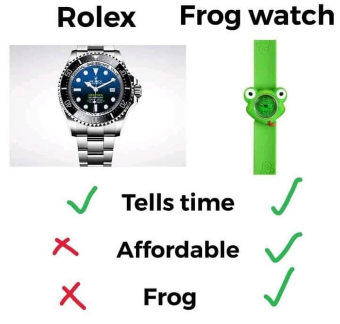

A lot of us tend to have an instinctual fear of great physical heights.
Me too. Sometimes when I look over the edge of a really tall building, I get light headed and my heart starts beating weird, because for some reason almost all great heights I go are graced by an absence of railings (cough cough).
The reason we are scared of great physical heights is because we're afraid of falling from that height. It's an awfully long way down, and falling from that kind of height is pretty much a one way ticket to permanent disfiguration or death.
But if you really think about it, it's not only physical heights that we tend to be scared of. Here, the 'we' that I'm talking about are the ambitious. We're also sometimes scared of metaphorical heights - heights of experience, of success, of achievement, even if we might not be fully conscious of it.
I catch myself doing it all the time - looking at people that have reached impossible heights, and trying to diminish it and rationalize it and make it seem less tall than it actually is, because I'm afraid I might never reach those heights myself.
Putting others down like this is only an indicator of your own lack of faith in yourself. And if you go one step further down, you end up with what is in essence slave morality, ressentiment - a blind, reactionary hate and putting down of all that is great, all that is mighty, all that is awe-inspiring, for these people know that they can never reach such heights themselves.
There is nothing inherently wrong with not being able to reach such heights of monetary, personal, or societal success. If people are interested in different things, and societal rewards for different things vary, then inequality is inevitable. It is only when those on either side, the societally successful or the societally unsuccessful, start bringing superiority and resentment into the equation, that things start going bad. For the societally unsuccessful, hate against the societally successful tends to consume their thoughts, robbing them of their opportunity to live fulfilling lives of their own.
For the societally successful, lording their success over those that did not have the same interests as them and declaring themselves better people for simply being interested in the right thing is incredibly pretentious, and will again result in polarization and hate because no one likes feeling diminished and put down.
It is this feeling that is the root of the problem - either the societally unsuccessful make themselves feel put down by projecting their insecurities onto the societally successful and thus painting them as the reason for their misery, or the societally successful make the societally unsuccessful feel put down by shows of superiority. Either way, we end up with ingroups and outgroups that scream at each other and try to prove that their way of life is better, and that they are on the right side of history, and in the process of doing so lose out on the joy of living their own lives.
This actually happens across all domains, in a much more general sense. The general form of this occurrence is "Those successful in domain X tend to look down on those unsuccessful in domain X and those successful in domain Y, while the unsuccessful in domain X resent the successful in domain X and the successful in domain Y tend to in turn look down on those successful in domain X".
Note that the following examples are not empirical observations, just things that could happen, and do happen, but not always. The academically successful can look down on the academically unsuccessful as not hardworking, while the academically unsuccessful look at the academically successful as orthodox sticklers that they're going to show up in the real world. The successful in academia can look at the successful in business as shallow, and the successful in business can look at the successful in academia as thinkers that have not built anything of import. And so on, and so forth, until the end of time across every single discipline.
This kind of putting down of people can happen in two ways - the putting down of excellence in a different domain, or the putting down of the more excellent in your own domain. You can optimize for many different goals in life - the default tends to be monetary prosperity, at least initially, but you can chase an understanding of the universe, fulfillment in life, intellectual satisfaction, or hell, even all of them.
If you've decided that you want to make lots of money, go into investment banking, and look at a startup founder that makes more than you, you tend to attack parts of their life that are unrelated to what you optimize for - that is, money. You'll say that their work-life balance is probably really bad. Or that their job security is pathetic. Or that they don't understand financial markets as well as you do. There are always ways to paint your own specific situation as the best by asking only the most pinpointed questions.
I like to call this the frog watch fallacy.
But if you thought being the most successful person in your field would be enough to finally stop this incessant comparison, oh boy do you have it coming. If a person successful in academia looks at a person successful in business, they don't even have to attack something else. They can simply attack the entire paradigm itself. Like I said before, the successful in academia can look at the successful in business as shallow, and the successful in business can look at the successful in academia as thinkers that have not built anything of import. And the same thing can happen across a multitude of different domains, in many different ways.
How, then, do you fix this? How do you go about chasing success and being wildly ambitious without this incessant comparison?
Well, you should decide to find out where your interests lie, understand whether those interests would be rewarded by society, not feel inferior to those who are more societally successful due to their different interests, and also not feel inferior to those who have achieved more success in your field of interest (fear/resent the heights that they have reached) and instead feel motivated and driven to learn from these people and strive to reach these heights yourself, and not look down at those less societally successful than you due to their differing interests.
That is probably the most reliable way to chase outsized success in a field without feeling resentment and burning up in the flame of comparison.
The point I'm trying to make is that comparison as a source of joy is futile, because there will always be ways to either hate others or hate yourself on the basis of your differences. There is no "better man" past a certain threshold. There is simply a better you.
So be the best you you can be. That is all that can be asked of you.
Or in the words of Rabbi Zusya, “In the coming world, they will not ask me: 'Why were you not Moses?' They will ask me: 'Why were you not Zusya?”